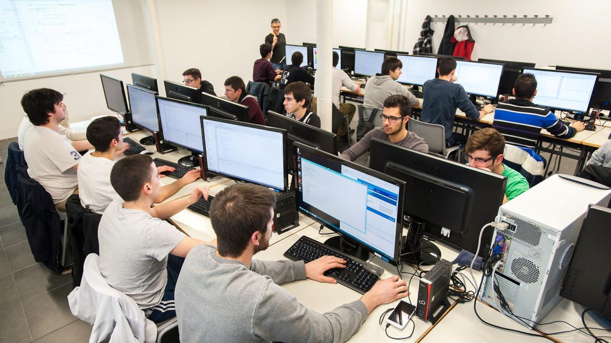
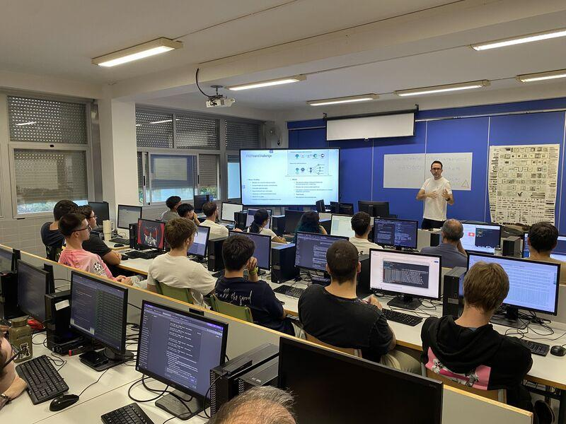

Talento local preparado para aportar valor
Jóvenes de nuestro entorno con formación técnica, iniciativa y ganas de implicarse. Valoramos conocimientos, madurez y motivación para proponer el mejor perfil.
Acerca a tu empresa estudiantes de Informática de SMR y DAM, con preparación técnica, motivación y ganas de participar en retos reales: soporte, redes, aplicaciones, datos y digitalización. Conectamos con lo que necesitas, buscamos el mejor encaje y te acompañamos en todo el proceso.

Próximamente: nuestro alumnado en clase
Una colaboración sencilla y acompañada para conectar lo que tu empresa necesita con lo que nuestro alumnado sabe hacer y pueda seguir aprendiendo.
Jóvenes de nuestro entorno con formación técnica, iniciativa y ganas de implicarse. Valoramos conocimientos, madurez y motivación para proponer el mejor perfil.
Estancias formativas no remuneradas. La Junta de Andalucía asume las cotizaciones a la Seguridad Social. Sin obligación de contratación posterior.
Valoramos competencias, intereses y autonomía antes de proponerte alumnado.
Nuestro centro prepara y gestiona la documentación necesaria.
Tanto si quieres reforzar el soporte tecnológico como avanzar en digitalización, podemos encontrar un perfil que encaje con tu actividad. Pincha en cada ciclo y descubre qué podemos aportar.
DAM no es solo programación. Nuestro alumnado combina desarrollo de software con bases de datos, interfaces, integración de herramientas, automatización y soluciones para el trabajo diario.

Formación realista, tareas acordadas y supervisión proporcional a su experiencia.
No necesitas tener una plaza definida ni diseñar un proyecto especial. Basta con contarnos cómo trabajáis y en qué tareas tendría sentido aprender y colaborar.
Nuestro objetivo es asegurar que la colaboración sea beneficiosa para ambas partes.
Contrastamos la actividad con conocimientos, intereses, motivación y autonomía del alumnado.
Nos encargamos de gestionar los trámites y la documentación, así como del seguimiento del alumnado. La empresa designa una persona tutora y facilita el entorno, los medios y la supervisión adecuados.
Respuestas claras, antes de empezar.
No hay remuneración ni cotizaciones a la Seguridad Social a cargo de la empresa. La Consejería de Desarrollo Educativo y Formación Profesional de la Junta de Andalucía gestiona y asume esas cotizaciones conforme al convenio. La empresa facilita el entorno formativo, una persona tutora y los medios necesarios para las actividades acordadas.
Sí. El alumnado está dado de alta en la Seguridad Social, con protección frente a contingencias profesionales derivadas de la actividad formativa. La Junta de Andalucía asume la cobertura de responsabilidad civil del alumnado de los centros docentes públicos.
No. La estancia es formativa y no implica contratar al estudiante al terminar, reservarle un puesto ni asumir nuevas colaboraciones. Si la experiencia es positiva, ambas partes podrán explorar oportunidades futuras libremente.
No hace falta crear un proyecto especial. El objetivo es aprovechar tareas reales de la empresa vinculadas a los conocimientos del alumnado.
Déjanos tus datos y te responderemos. Puedes proponer un horario o una videollamada.
¿No se muestra el formulario? Abrir el formulario en una pestaña nueva
¿Prefieres escribir directamente? jarcdia091@g.educaand.es